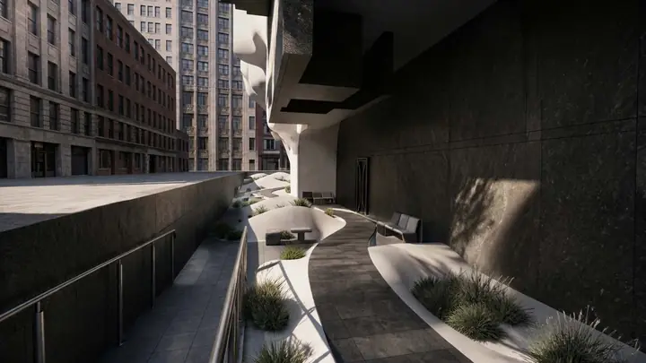
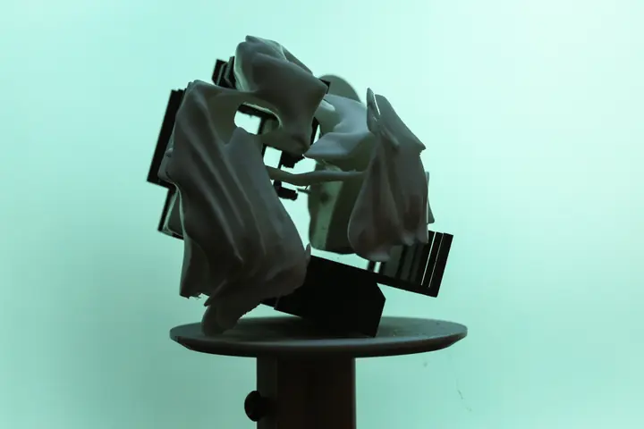
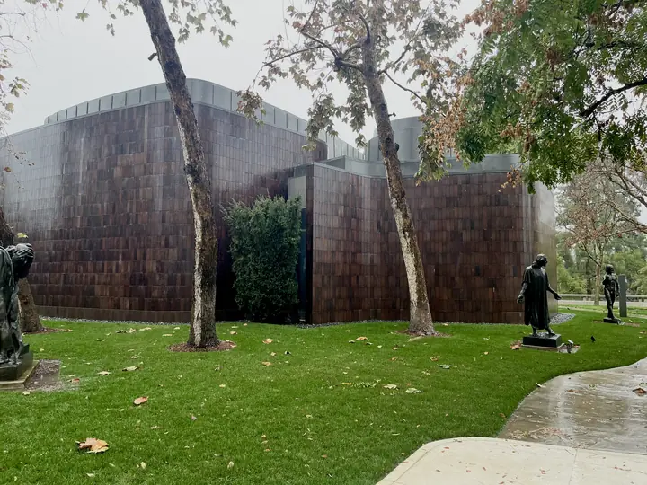

Shwe Chee Myint Zaw
- Name
- Shwe Chee Myint Zaw
- School
- SCI-Arc
- Years
- 2025–2026
- Works
- 05 projects
Selected Work

Athletic Center & Urban Wind Farm 02
Curate, Capture, Communicate 03
Norton Simon Museum 04 Mediascape, according to Arjin Appadurai, is the “distribution of the electronic capabilities to produce and disseminate information (newspapers, magazines, television stations, film production studios, etc.), which are now available to a growing number of private and public interests…Mediascape, according to Arjin Appadurai, is the “distribution of the electronic capabilities to produce and disseminate information (newspapers, magazines, television stations, film production studios, etc.), which are now available to a growing number of private and public interests… Seminar 1: Contemporary 05 Making + Meaning
Making + Meaning
- 01Athletic Center & Urban Wind Farm 2B Studio · DS1021 Spring 2026
- 02Curate, Capture, Communicate Visual Studies III · VS4021 Spring 2025
- 03Norton Simon Museum History of Architecture III · HT2025 Spring 2025
- 04Seminar 1: Contemporary Seminar 1: Contemporary · LA8112 Spring 2025
- 05Making + Meaning Making + Meaning Summer 2025
My name is Shwe Chee Myint Zaw.
- Name
- Shwe Chee Myint Zaw
- School
- SCI-Arc
- Portfolio
- Gateway, 2025–2026
- Disciplines
- Design studio · Visual studies · History & theory · Liberal arts
Statement
My interest in architecture began early, shaped by a fascination with how buildings can evoke emotion and influence the way people experience space. Growing up in Myanmar within a construction-oriented environment, I was exposed to building as both a practical process and a cultural expression. Over time, this developed into a critical awareness of the built environment at home, where architecture often feels repetitive and lacks a distinct identity. This realization became the foundation for a long-term ambition to contribute to a more progressive architectural direction in Myanmar.
Transferring from a small architectural program to a larger, more rigorous institute introduced a new set of challenges. The shift in scale, expectations, and pace required adjustment, both academically and personally. Beginning in a collaborative studio environment, especially through a partner-based project as an introduction, was initially difficult, as it demanded strong communication, adaptability, and a willingness to reconsider individual ideas. Over time, this experience became an essential part of learning how to engage with different perspectives and approaches to design.
Moving forward, I aim to continue growing both as a person and as an architect. Ultimately, my goal is to apply what I learn toward transforming the architectural landscape of Myanmar, contributing to a built environment that is more expressive, diverse, and reflective of its own identity.